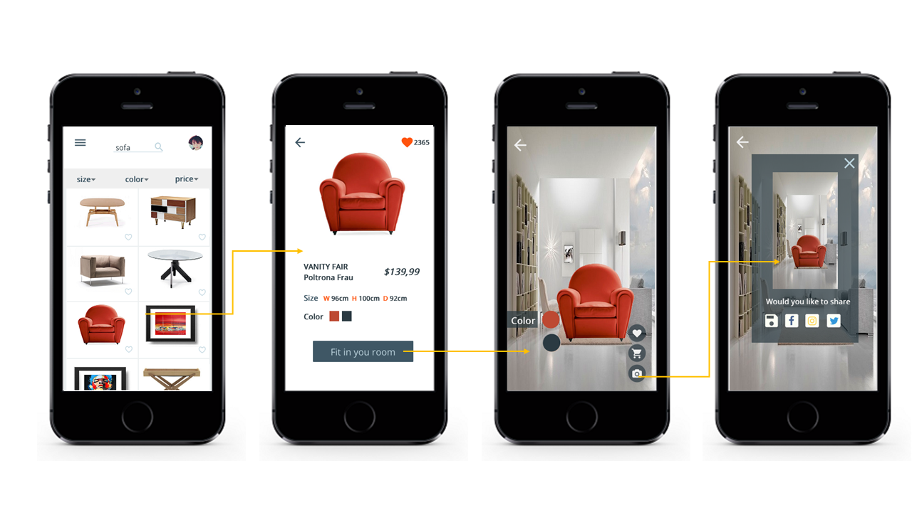

Fitin
Role: UX Designer
When: 25.11 to 27.11
Fitin is a project in JUNCTION 2016 (Europe's largest hackathon). The mobile application aims to help customer with online furniture shopping by applying Augmented Reality technology. Thus, customers can see the real vision when furniture is in their home, which significantly facilitates the experience of shopping. In addition, the system can be also use by e-commerce to sell their products with a better shopping experience.

Now Fitin is a product can help you with that, since this project only lasted for two days, our design process was more like agile design.
Know user
We interviewed around 10 person during Junction, the age from 20s to 50s, we inquired about their previous online shopping experience (especially for furniture), additionally, we asked if there anything AR product they used in shopping or other filed. Based on the quick research, we extracted four key findings (pain points).
Design requirement
Then we analyzed competitor products, one application on IPad named “AF” is our main competitor, therefore we tried and explore to see how it works, after that, we devised our own design requirement with two more new.
Sketching
Interaction model
